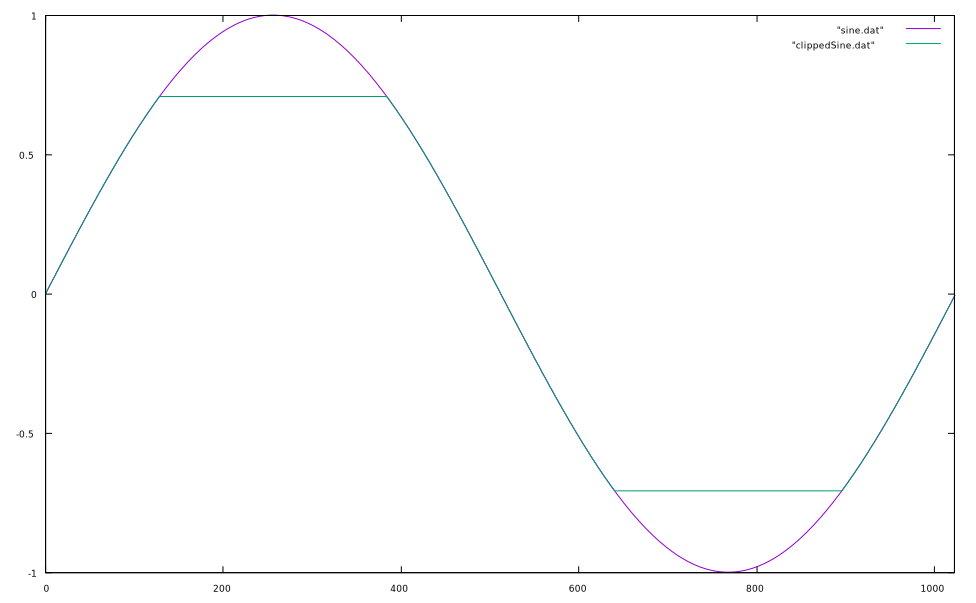
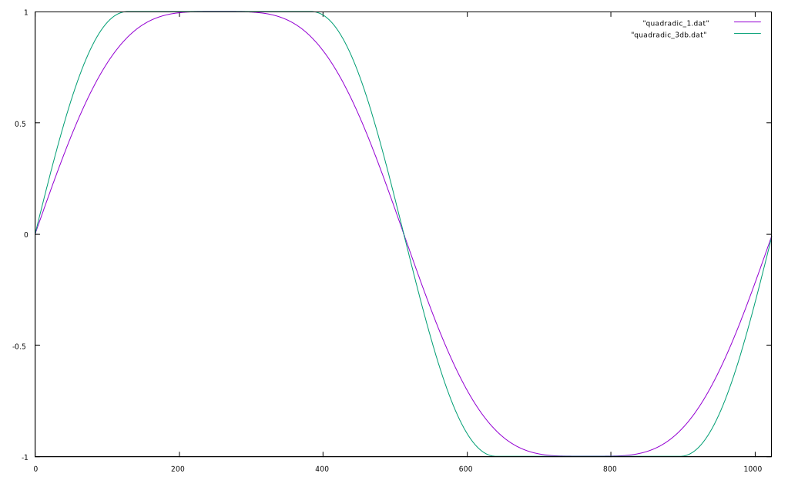
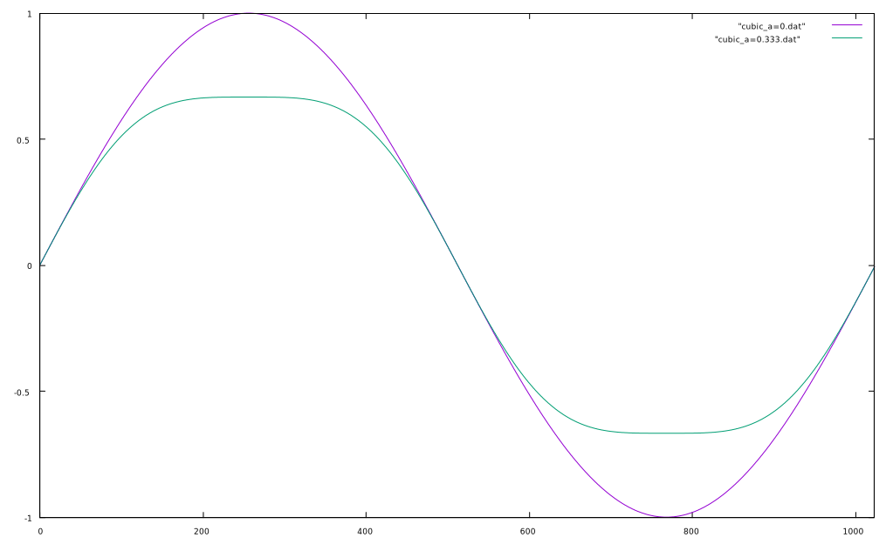
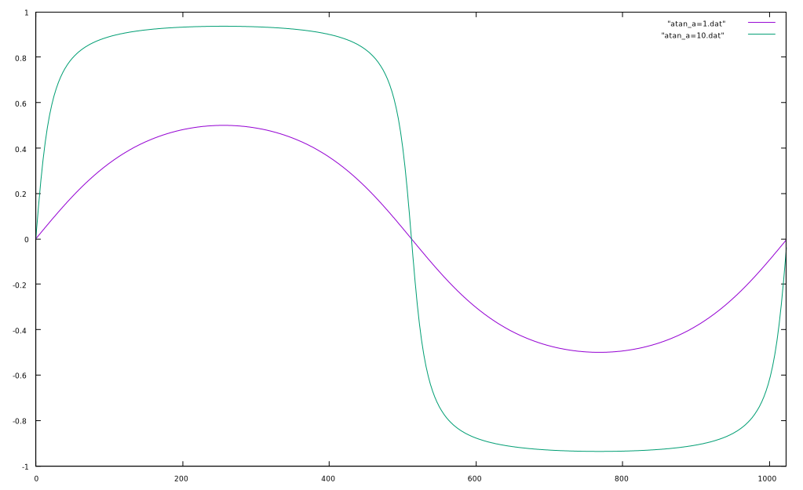

If the peak amplitude exceeds 1, the result is distortion of the signal in the form of clipping. This can damage certain hardware and is best avoided.
If the level above 1 is known, one can simply multiply the signal by 1 minus that value.
More likely, however, whether or not the amplitude will exceed 1 is unknown. In this case there are several options: hard clipping. soft clipping, limiters, or compressors.
Hard clipping is done by simply limited the maximum and minimum sample values. When a signal exceeds the limit, a hard edge is created that creates high frequency harmonics (distortion).

In this image, the purple line is a sine that is unclipped with a maximum amplitude of 1. The green line is a sine that is clipped at -3 dB (approx. 0.707 linear amplitude). Notice the hard edge at the clipping limit.
Soft clipping is another method of clipping that softens the edges of the clipped boundary using non-linear functions. This can be done several ways; most often, however, you’ll see the use of the tangent function or quadratic functions.
Quadradic
By calculating the coefficients beforehand, creating a soft clipper with the quadratic equation can be relatively fast. This method, however, does not allow scaling via a gain coefficient and thus acts to shield the output from being driven too hard.
Simplified…
Here is a plot of a sine wave run through this function when the input gain is 1 (0dB, purple) and 1.412 (+3dB, green). When this function is ran, you can see the distortion occur as the steepening of the angle as the waveform ascends and descends. Notice, however, that when the input gain is above unity, the function prevents it from going above 1.

Cubic
In this function, alpha is called the scaling coefficient which can vary between 0 and the limit, typically 1/3 which produces a clipped level of about -3dB. When the scaling coefficient is 0, the waveform as it is is passed through (no clipping, no distortion) but as alpha is increased, the waveform is clipped (softly!).

INTERESTING THING TO ASSIGN???
What happens when the scaling coefficient goes above approx. 1/3? Maybe have the students show it and describe what happens, especially harmonically…
Tangent Function

Notice that when alpha >> 10, the function approaches infinite clipping distortion; i.e. approaches a square wave with soft edges.
Thoughts
Although both of these methods can produce soft clipping, the cubic or quadtradic functions are generally more efficient since trigonometric calculations must be performed on every sample in the tangent function.
By cascading multiple softclippers, one can crudely approximate analog distortion.